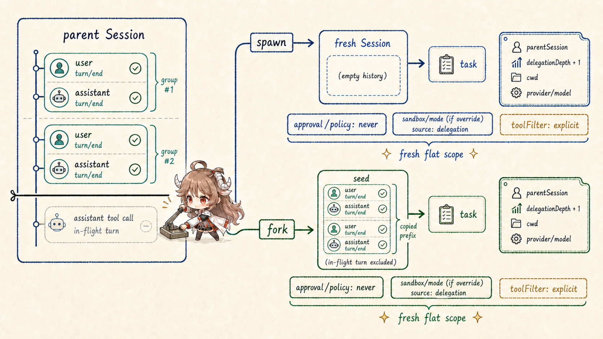
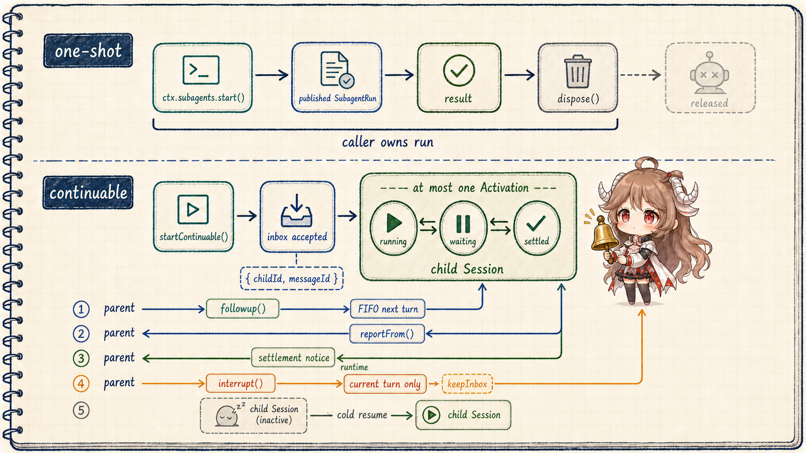
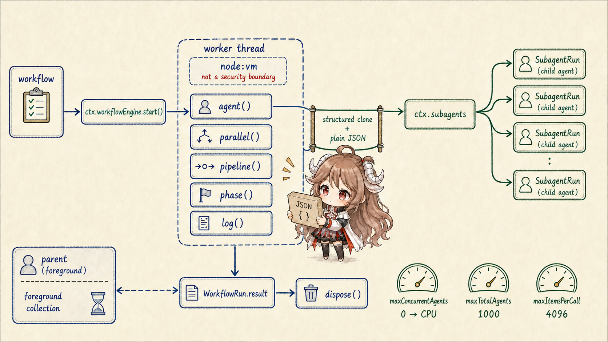
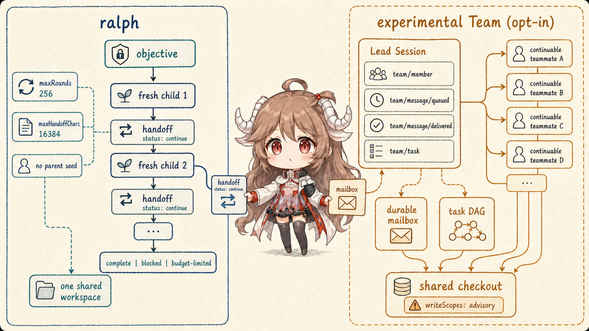

“开几个 Agent 并行做”听起来像一个调用选项，实际至少包含六个决定：child 看不看 parent history；谁拥有它的取消与 dispose；结果是同步返回、异步通知还是 durable mailbox；可以继续对话还是一次性结束；并发和深度在哪里封顶；多个 worker 改同一个 workspace 时谁负责冲突。
DSH 的答案不是一个巨大的 AgentManager，而是多个 seam。ctx.subagents 统一 child provider 和生命周期；ctx.workflowEngine 执行模型写的编排脚本；Ralph 把固定顺序策略装成普通工具；实验性 ctx.agentTeams 再在 continuable children 上叠 durable roster、mailbox 与 task DAG。
阅读契约。读完以后，你应该能说明：spawn 和 fork 唯一的历史差异；为什么 fork 必须切在最后一个 turn/end；one-shot run 与 continuable Activation 谁负责收尾；reportFrom() 和 settlement notice 为什么不能合并；workflow worker 提供什么隔离、又绝不提供什么安全；以及 Ralph 与 Team 为什么不是“串行版和并行版的同一个功能”。
证据边界。本文固定在提交 b150a55。实验性 Team 位于 packages/experimental，需要显式启用；它不是 base bundle 的稳定默认协作协议。toolFilter 和 shared-cwd policy 也不是安全边界，外部进程与 Bash 仍能绕过协调约定。
一、一个 provider seam，多个编排消费者
1.1 SubagentRuntime 只统一启动契约，不统一实现
SubagentRuntime 注册具名 provider。start(name, request) 只服务 one-shot child；startContinuable(spec) 建立可继续 child；followup、interrupt、reportFrom 与 list/drain 操作都围绕 durable session identity 和 direct-parent authority 工作。provider 可以同进程、跨进程或未来 transport，消费者不必因此改变结果契约。
subagent 与 subagent_fork 直接选择一个 provider 实例。workflow 和 ralph 先启动 WorkflowRun，再由 worker 通过同一个 seam 启动 children。实验性 Team 使用 continuable provider，但把 identity、mailbox 和 task ownership 收进自己的 domain。
1.2 Depth、policy 与 capability 都在 child 创建前固定
Child header 保存 parentSession 与单调的 delegationDepth。tool-subagent 默认 maxDepth: 3；当前 depth 加一超过 cap 就在创建前拒绝，resume 不能通过把 runtime option 调低伪装成 root。provider 还声明 outputSchema、depthLimit、toolFilter、persona 等 capability，不支持的 request 在 child 出现前失败。
同进程 delegation 会把 approval 固定为 never；若 parent 有显式 sandbox override，则以 source: delegation 写进 child log。缺省 sandbox mode 不复制。这个 policy snapshot 与可选 toolFilter 是两回事：filter 改 schema、lookup 和执行可见性，却不是从 parent 自动继承的 authority ceiling。
二、spawn 与 fork 只在 seed 上不同
2.1 Spawn 空历史；fork 复制最后一个完整 turn 以前的前缀

spawn 不传 seed，child 只看 standalone task。fork 传 parent 已完成 turn 的连续前缀。调用 subagent 的那个 parent turn 仍开放，assistant tool call 还没有对应 result 和 turn/end；若复制 raw tail，child Session 一开始就不平衡。
所以 fork 只切到最近 turn/end。parent 尚无完整 turn 时，fork 退化成 fresh spawn。seed 是一次性 snapshot，parent 后续消息不会同步给 child。
2.2 历史继承不等于 scope 或权限继承
两条路径都走 shared in-process driver：继承 cwd、lineage 和默认 provider/model/maxTokens，却创建 fresh flat registration scope。fork 复制 conversation history，不复制 parent 的 tool restriction；显式 persona、toolFilter 与 structured output 在 unpublished child scope 安装。
同 model/route 的 one-shot fork 有机会复用 inherited byte prefix。base composition 因此让 spawn 使用 continuable background，让 fork 保持 one-shot：continuable child 额外的 report tool 与 prompt section 会出现在 inherited history 之前，反而摧毁 fork 想复用的整个 prefix。
三、one-shot run 和 continuable child 的所有权不同
3.1 One-shot 以 SubagentRun 为唯一 holder-owned 边界

start() fulfill 前 provider 拥有所有 unpublished resource，失败必须 rollback 并 quiesce；fulfill 后 caller 拥有 SubagentRun，无论 result 成败都必须 dispose()。本地 run 的 id 就是 child Session id，结果只选 child 自己最后的非空 assistant output 或 structured value，不把 fork seed 和中间步骤塞回 parent。
Foreground tool 等待 result 并在 finally dispose；one-shot background 则交给 generic Task runtime，返回 job id。多个 sibling 可在 maxParallelToolCalls rolling pool 中重叠执行，但 result 仍按模型 call 顺序提交。它们对同一 workspace 的冲突由上层协调。
3.2 Continuable 以 durable Session 和最多一个 Activation 为核心
startContinuable() 在 initial prompt 被 inbox 接受时返回 { childId, messageId }，不等待 turn 开始，也不保证消息已经进入 Session log。之后 continuation manager 拥有最多一个 process-local Activation；running、waiting、settled 从 Agent quiescence 与 owned children 派生，inactive child 可从 persistence cold resume。
Parent followup() 总是排到 FIFO next turn，不能 steering 当前工作；interrupt() 只 cancel 当前 turn 并 keepInbox，descendants 继续。Child 的 reportFrom() 是可选、自发的内容回传；Activation settlement notice 是 runtime 必发的 outcome/final-output 通知，来源不同，不能把系统文字伪装成 child 自述。两者都要求 live direct-parent 路径，没有 cross-process durable mailbox 或 exactly-once 保证。
四、Workflow 把编排脚本放进 worker，不把 child 放进去
4.1 Script 是 control plane，Agent 仍在 Host

worker-thread engine 每个 run 使用一个 Node worker。模型脚本只拿到 args 和 agent()、parallel()、pipeline()、phase()、log() hooks；child request 通过 typed protocol 回到 Host 的 ctx.subagents，child Agent 从不进入 worker。
边界只接受 plain lossless JSON，拒绝 function、cycle、exotic prototype、non-finite number 等。默认 maxConcurrentAgents: 0 按 CPU 解析，maxTotalAgents: 1000，单次 parallel/pipeline 最多 4096 items；per-run request 只能降低 total cap，不能抬高 deployment ceiling。
4.2 Worker 是可终止的调度隔离，不是 security sandbox
worker 让同步死循环不阻塞 Harness event loop，worker.terminate() 也给 dispose 一个最终停止手段；它还以空 environment 启动并用 structured clone 限制正常 API。但 node:vm 只是 API shaping，逃逸脚本仍可能取得 Node capability 与宿主权限。真正不可信脚本需要换成 process/container engine。
WorkflowRun 前台收集，result 不 reject：执行错误解析为 stopReason error，取消在 bounded grace 内解析为 cancelled，consumer 仍在 finally dispose。当前没有 journal、resume、saved workflow 或 nested workflow；重启不能续跑中间 child progress。
五、Ralph 与实验性 Team 是两种不同的长期协作
5.1 Ralph 用 fresh child 序列淘汰对话惯性

ralph 是固定 foreground workflow，不是 agent-loop 的特殊模式。每一轮启动一个 fresh、无 parent seed 的 structured-output child；immutable objective、轮次、shared-workspace instruction 和上一份 bounded handoff 构成新 prompt。默认最多 256 轮，handoff 最多 16384 字符。
Round report 的 status 是 continue、complete 或 blocked；最终 tool result 收敛成 complete、blocked 或 budget-limited。完成与 blocker 都是 worker self-report，没有独立 verifier。每轮 failure 终止 run，不自动重试；workspace 是唯一长期共享事实，未写入的 reasoning 随 child 消失。
5.2 Team 用 Lead log 协调具名、可继续、并发成员
实验性 Agent Team 让 root Session id 成为隐式 TeamId。具名 teammate 是 continuable direct child；Lead log 保存 team/member、team/message/queued/delivered 和 revisioned team/task snapshots。mailbox 在尝试投递前先 append+flush，task dependencies 必须形成 DAG。
所有成员仍共享一个 checkout。writeScopes 只发 overlap warning，不是锁，也不授权写入；Bash、formatter、generator 和外部进程都能绕过。mailbox 的保证是 process-local retry 加 target-Session de-duplication，不是跨进程 exactly-once。Team 因此适合显式的人类请求和受控协作，而不是自动把普通任务扩成一群 Agent。
六、这组多 Agent 机制带来的工程判断
- 先选生命周期，再选 provider。要一次答案就 one-shot；要持续对话才 continuable；不要用 background 当作含糊的第三种状态。
- 没有独立上下文需求，就不要 delegation。一两个有依赖的动作直接做，large fan-out 才进入 workflow。
- Fork 只继承完成事实。复制开放 turn 会制造不平衡工具历史；后续 parent 变化也不会自动同步。
- Visibility 不是 authority。toolFilter、prompt policy 和 writeScopes 都不能替代 sandbox、approval 与文件冲突控制。
- 每个 holder 都必须负责 quiescence。SubagentRun、WorkflowRun、Activation 与 Team forest 各有自己的 dispose/drain 边界。
- 不要把 self-report 当验收。Ralph complete、child report 与 settlement notice 都需要 parent 或外部证据判断质量。
最后一篇会回到 Cordis 本身：当 runtime 把三类只读 Inspect 与 cordis_define、cordis_run、cordis_stop、cordis_undefine 暴露给模型，它究竟获得了哪些临时扩展能力，又有哪些执行、审批和持久化边界仍然不能越过。
参考源码
- subagent seam README 与 tool-subagent README：provider registry、one-shot/continuable、depth、policy 和模型工具生命周期。
- spawn README、fork README 与 shared driver：seed boundary、child scope、result 与 dispose。
- workflow seam、worker-thread engine 与 workflow tool：script hook、caps、JSON boundary、取消与前台收集。
- Ralph README：fresh round、structured handoff、budget 与限制。
- experimental Agent Team README 与 tool adapter：durable roster、mailbox、task DAG 与模型权限。